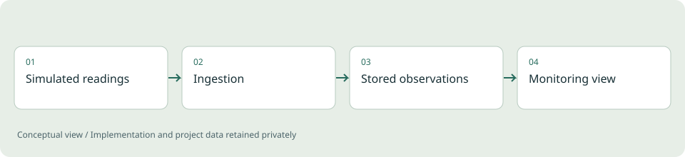
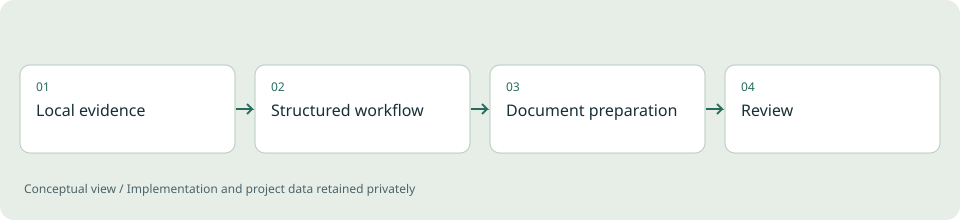
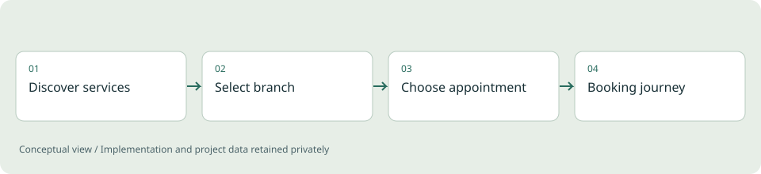
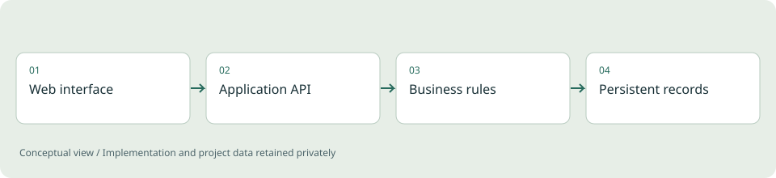
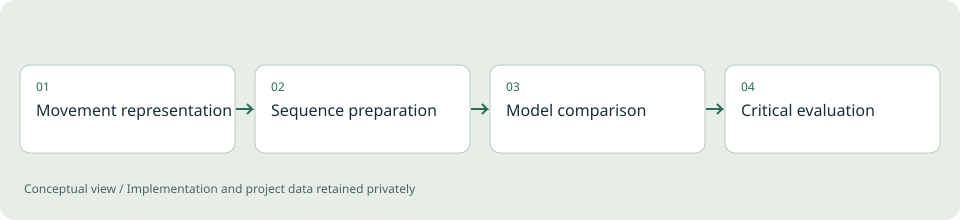
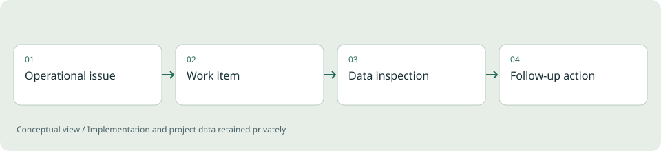
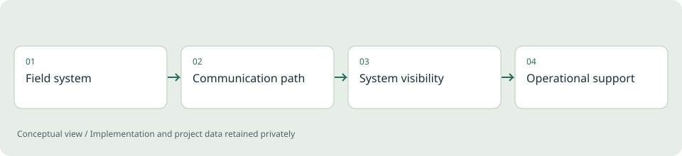
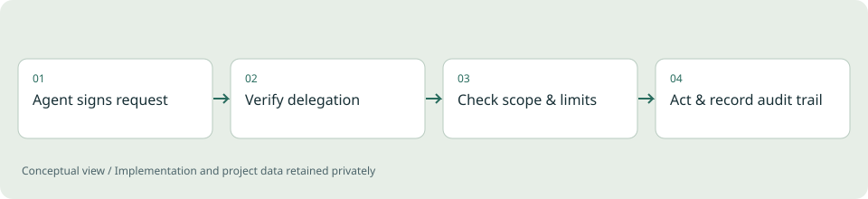
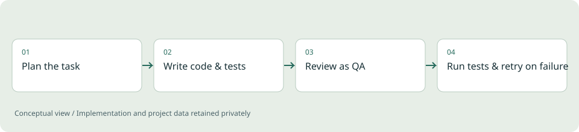

Backend engineering / Personal reference project
Distributed Telemetry Backend
Exploring how device readings become useful operational information, including what happens when traffic grows or a dependency fails.

Go / Java / Spring Boot / PostgreSQL
Read case studyFull-stack engineering / Demonstration application
Motorhome Booking Platform
A booking workflow that connects a customer-facing experience with availability and reservation rules.

Node.js / JavaScript / SQLite / HTML & CSS
Read case studyDeveloper tooling / Python workflow project
ApplyKit
Organizing reusable application work while keeping personal documents separate from the reusable toolkit.

Python / Command-line workflows / Templates
Read case studyFrontend and full-stack / Next.js demonstration
Barber Booking Experience
A service-business website that connects discovery, branch selection and a booking experience.

Next.js / TypeScript / Prisma
Read case studyFull-stack / React and Python demonstration
Service Booking: Frontend to API
Exploring the boundary between a web interface and the backend that supports a service-booking workflow.

React / TypeScript / FastAPI / PostgreSQL
Read case studyApplied ML / Master's thesis
Location-Sequence Research
Research into symbolic movement representations and the relationship between predictive utility and privacy.

Sequence modeling / Data representation / Evaluation
Read case studyProfessional project / High-level case study
Internal Operations & Telemetry
Connecting operational work and telemetry inspection within an internal application context.

Web workflows / APIs / Data analysis
Read case studyProfessional project / Systems integration
Charging Connectivity & Commissioning
Diagnosing communication and observability problems in a charging-system context.

Telemetry / Connectivity / PLC-HMI context
Read case studyBackend engineering / Reference implementation
Agent Identity Infrastructure
Treating an AI agent as an accountable actor while keeping a human or legal entity as the contractual principal.

TypeScript / Fastify / PostgreSQL / Redis
Read case studyApplied ML / Tooling experiment
Multi-Agent Coder
A small harness that runs planner, builder and reviewer LLM roles in one coding pipeline with real test feedback.

Python / Multi-provider LLM orchestration
Read case study